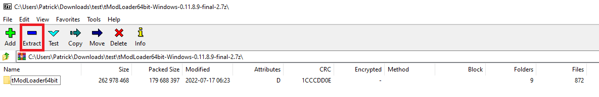

Tutorial to Install 64bit tModLoader 1.3
2. Once downloaded, open archive of the .zip file and then extract or select option "extract here"

It is recommended to make a seperate folder when extracting so you don't lose any files
Note: For this example 7-Zip was used, though WinRAR also works